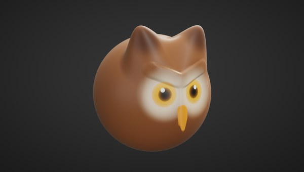
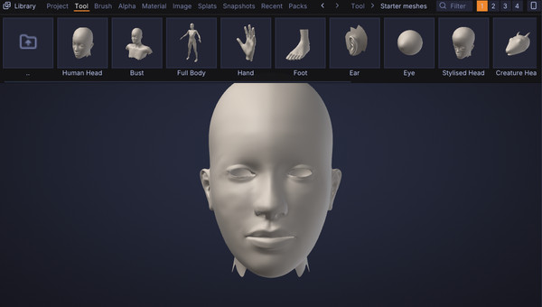
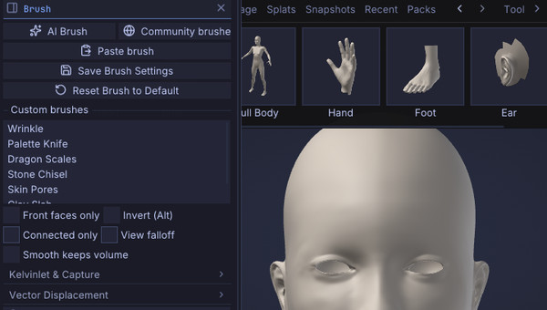
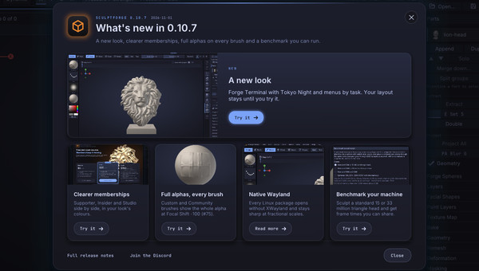
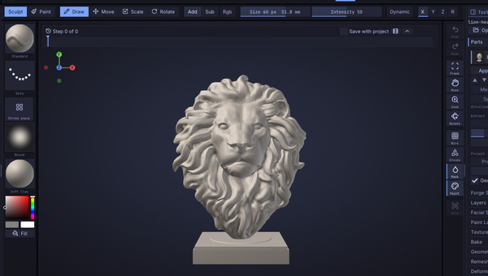
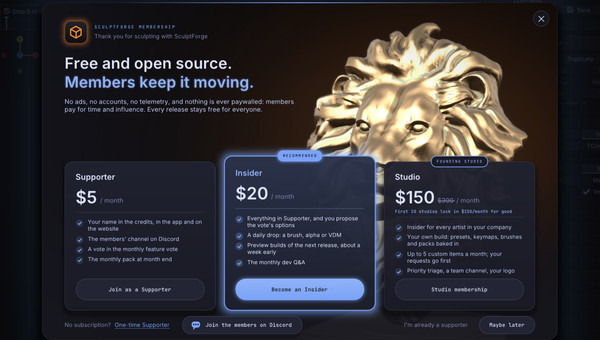
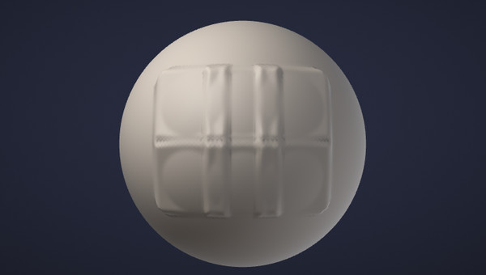
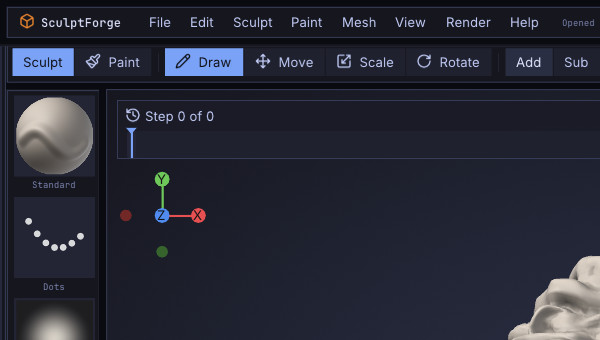
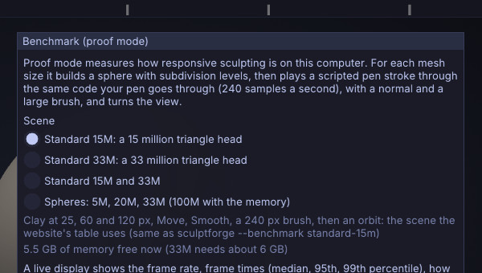

What's new
What changed in each version of SculptForge, newest first. The first time you start a new version, a window shows its main features, each with a Try it button; Help > What's New opens it again. Below are the last three versions in full, then the older ones in groups. Every detail is in the changelog.
Version 0.10.9#
Your first sculpt in ten minutes, starter meshes, brushes that keep their settings, and tablets that just work.

Your first sculpt
A 12-step lesson that turns the default sphere into a painted, rendered mushroom house.
How it works
Starter meshes
Start from a head, bust, body, hand or clean primitive, all quads at life size.
How it works
Brushes keep their settings
Size, intensity, falloff, stroke and alpha follow each brush; Save Brush Settings keeps them.
How it works
What's New, redesigned
The main features as cards with a Try it button; older versions fold into short groups.
Read moreAll changes
- Each brush keeps its own settings: Draw Size, Intensity, Falloff, RGB Intensity, stroke and alpha follow the brush, custom and Community brushes included. Brush > Save Brush Settings keeps them for the next start, Reset Brush to Default puts back the shipped values, and Preferences > Input > Share size and intensity across brushes keeps the old way (#78). See Sculpting.
- Alpha options (Alpha palette): Follow stroke direction turns the alpha along the stroke, smoothed as Blender's Rake does; Angle and Angle jitter turn it by a fixed or a random amount; Tile repeats it inside the brush. They work with custom and Community brushes too, and each brush keeps its own (#76). See Alpha options.
- Blender style: Alt+drag masks on the model and Ctrl+Alt+drag unmasks, as in Blender 5.1 and later; beside the model Alt+drag still turns the view. Preferences > Input > Emulate 3 Button Mouse makes Alt+drag turn the view everywhere. Shift+F now sets the brush's Intensity, not Smooth's (#77).
- View > Lock camera (Shift+L): drags that start beside the model sculpt instead of turning the view, and the status bar shows CAMERA LOCKED while it is on (#62).
- Tablets: plug a tablet in while SculptForge runs and it just works ("Tablet connected" in the status bar), also through Wacom Bridge. On Windows, pressure works with the Wacom driver's Use Windows Ink on or off. Preferences > Input shows whether pressure is detected, with a troubleshooting link. The view no longer jumps when the pen comes back into range, and the active Part changes only with Alt+click on the keyboard; the status bar names the new Part. See Troubleshooting.
- Smaller (or larger) corner axes: Draw > Camera > Gizmo size sets Small, Medium or Large (Navigation).
- View Figure: turn it on beside Axes for a small head in the corner that turns with the view; click it to snap to the nearest side.
- Starter meshes: start a sculpt from a human head with eye and mouth loops, a bust, a full body in A-pose, a hand, a foot, an ear, an eye, a stylised head, a creature head, a torso, or a bevelled box, cylinder, capsule or ring, all clean quads at life size with subdivision levels ready. File > New from Starter Mesh, the Library's Tool > Starter meshes, or Start from a head in the welcome. See Projects.
- Your first sculpt in 10 minutes: a step-by-step lesson for people who have never sculpted. Turn the default sphere into a little mushroom house with a spotted red cap, a door and glowing windows, using masks, Move, Inflate, Crease and Clay, Vertex Paint and PBR shading, and save a render to share. Start it from the welcome's Start the 10-minute lesson button or Help > Your first sculpt (10 min). See Your first sculpt.
- Save Render (Render > Materials): the view without the interface, at twice its size, as a PNG in your Library (Library > Image).
- A new What's New: after an update, a window shows the main features as cards with a picture, one line and a Try it button that opens the feature (switch the look, select the brush, open the membership card...). Help > What's New opens it again; Esc closes it. This chapter shows the last three versions in full and folds the older ones into short groups, on the website too.
- Image to 3D with no setup: the free default is now Hunyuan3D 2.1, which needs no token. TRELLIS.2 ("Best detail") still needs a free Hugging Face token (Preferences > AI); without one, Hunyuan3D 2.1 runs instead and the status line tells you. Your own model choice is kept. See Image and text to 3D.
- Generated models arrive as clean quads: Quad Remesh is now the default, with one subdivision level holding the detail, so you can sculpt and subdivide straight away. Voxel remesh and Off are still in Remesh.
- Calm, clear hover: buttons, menus and shelves brighten a little as you point at them, tiles lift a little, sliders show their exact value, and the keyboard focus gets a ring as strong as your Outlines setting. Prefer less movement? Turn on Preferences > Interface > Reduce motion (Interface).
- Picker thumbnails on top: the enlarged thumbnail you point at in a picker is no longer hidden under its neighbours (#86).
-
Focus Detail (experimental): sculpt a head of a billion micro triangles from one compressed file. Detail loads where you look and where the brush is heading, and the rest shows a lighter version. Saving writes only what you changed. Try it with
sculptforge --benchmark standard-1b(Linux and macOS for now). - Precision work for pores, wrinkles, jewellery and trims: Steady Stroke (L) with every stroke type and a catch-up on release; World Size, so the brush keeps its size in mm on the surface as you zoom; Draw Size down to 0.5 px with Shift+[ / ] for 1 px steps; hold Shift+Alt while drawing to move the brush at a quarter of the pen's speed; and a pressure curve for each brush with a Fine detail preset. The brush centre now sits exactly under the cursor at any zoom. See Precision work.
- UI scale works live: Preferences > Interface > UI scale (100% to 200%) resizes text and panels at once, no restart. Automatic follows the monitor the window is on, so on Windows moving it between a 100% and a 150% monitor rescales it right away (#87). See The interface.
- The pen keeps working the panels: with some tablets (Huion, pen displays, Wacom with Windows Ink on or off) the pen picked one brush, then stopped clicking menus and the canvas until you used the mouse. SculptForge now makes the pen's clicks itself (#95). See Troubleshooting.
- Mouse mode is relative again: with Mouse mode on (Preferences > Tablet) the pen moves the cursor by how far it moves, whatever the driver's mode, and the arrow is drawn right at the brush (#72).
- Two screens: SculptForge no longer slows down when the pointer is on your other screen; it rests only when its window loses focus.
-
Turn AI off: Preferences > AI > Enable AI features (the welcome asks too). Off hides AI Brush and Generate 3D everywhere and SculptForge makes no AI network calls. Your art is never uploaded or used for training. AI features run only when you use them and can be turned off. Studios can set
SF_AI=off. See The interface. - Big brushes stay smooth on dense meshes: on models from about 4 million triangles a stroke's dabs are worked out beside the view, so a 240 px brush on 33 million triangles no longer freezes the view for a third of a second at a time (slowest frames about 35 ms instead of 300), and letting go of the pen is instant. The stroke itself comes out the same.
- Move keeps up on dense meshes: Move no longer slows to a crawl on 33 million triangles with a fast pen, and the first orbit after a long stroke no longer hitches.
- No more running out of memory: Help > Benchmark skips a scene your computer hasn't got the free memory for (and says how much to free), and Subdivide, Divide, Micro and Voxel Remesh ask first when the result wouldn't fit in the memory free now.
- Clay follows Intensity and pressure: Clay and Clay Block build gently with a light pen or a low Intensity instead of planing flat as at full strength (#83). See Sculpting.
- Alphas on micro levels: Drag Stamp and every stroke stamp your alpha on a micro level too (#92).
- Brushes hold on at silhouettes: a stroke sliding past the edge of a form in profile keeps sculpting while the brush still covers it (#84).
- Smooth face group borders: a Brush palette option that straightens jagged clothing edges between face groups and leaves the rest alone (#81). See Smooth face group borders.
- Colour tints the material: pick a colour and Parts with no vertex paint take it on in the Lit Sphere material. See Vertex Paint and materials.
- Cut: one tool that cuts the active Part with a Line, Lasso, Rectangle or Polyline. Away removes what the shape covers and closes the cut with a flat cap, In cuts a flat-bottomed pocket and Add raises the shape out of the surface. The result stays watertight and follows the symmetry. Hold Ctrl+Shift and pick a Cut shape, or open Tool > Cut. See Cut (#101, #91).
- Mask: Front faces only: Mask Lasso and Mask Rectangle can leave the far side alone (Masking, #91).
- Duplicate Part has a shortcut: Ctrl+Shift+D (Parts).
- Brush previews fixed: the shelf shows Tendril and Elastic Tendril as long horns pulled out past the ball, as they behave in the viewport, and Layer and Nudge with clean shapes; previews are rebuilt once after updating.
- Library: projects no longer show twice on Windows (#90); the close button stays on small screens and Esc closes the Library (#80).
- Cleaner outlines: the right shelf's outline draws correctly and the x buttons are centred (#98).
- macOS: a window closed in full screen reopens maximised, with the window buttons reachable (#85).
- Stroke popup: press G (Z in the Blender style) or the button under the Stroke tile for a grid at the cursor: the stroke types plus Add, Sub, Smooth, Mask and Select. Hold the key, point and let go, or tap it and click. Smooth, Mask and Select stay on without holding Shift or Ctrl. See Strokes.
Version 0.10.8#
Tablets in mouse mode follow the pen again.
All changes
- Tablets in mouse mode work again: on some Windows tablets with Mouse mode on (Preferences > Tablet) the brush stopped following the pen in 0.10.7. When the system can't say where its cursor is, the pen now moves the brush by how far it moves, from where it was (#72).
Version 0.10.7#
A new look, clearer memberships, full alphas on every brush and a benchmark you can run.

A new look
Forge Terminal with Tokyo Night and menus by task. Your layout stays until you try it.
How it works

Full alphas, every brush
Custom and Community brushes show the whole alpha at Focal Shift -100 (#75).
How it works
Native Wayland
Every Linux package opens without XWayland and stays sharp at fractional scales.
Read more
Benchmark your machine
Sculpt a standard 15 or 33 million triangle head and get frame times you can share.
How it worksAll changes
- A clearer membership card: the three memberships side by side with what each one gets you, in your look's colours. Maybe later now hides it for 30 days.
- New memberships: Supporters get the credits (in the app and on the website), the monthly pack and a vote; Insiders also get daily drops and preview builds about a week early; Studio covers the whole company with a custom studio build (Founding Studio: the first 10 studios lock in $150 a month). Every release stays free for everyone; bug-fix and security releases go out to everyone the same day.
- Full alphas on custom brushes: at Focal Shift -100, Clay Slab and the other custom and Community brushes now show the whole alpha to its corners, as the built-in brushes do (#75).
- A new look: new installs start in Forge Terminal with the Tokyo Night colours and the SculptForge layout: menus by task (File, Edit, Sculpt, Paint, Mesh, View, Render, Help) holding every palette, a status bar and a one-row tool shelf. If you are updating, nothing changes until you say so: a card offers Try it or Keep my layout. Coming from ZBrush? Preferences > Interface > Look > ZBrush-style layout (or the button in the welcome) brings back the palette bar and the two-row shelf. Six more colour schemes, Match my desktop theme, Phosphor, Blueprint and the Classic look are there too. See The interface.
- Native Wayland on Linux: every Linux package opens without XWayland, stays sharp at fractional scales and reads pen pressure through tablet-v2. The RHEL and Rocky builds now include libdecor (title bars on GNOME Wayland). See Wayland and X11.
-
Benchmark your machine (Help > Benchmark, or
sculptforge --benchmark standard-15m): a procedural 15 or 33 million triangle head sculpted with Clay at 25, 60 and 120 px, Move, Smooth and a 240 px brush, reporting frame times (p50, p95, p99), stroke lag, the worst stall and memory. See Performance.
Earlier versions
0.10.1 to 0.10.6#
- PBR viewport: the texture's material lit by an environment, as fast as Lit Sphere
- UV Editor: seams, unwrapping, UDIM packing and live stretch on the model
- Keep Masked remeshing: the masked part keeps its triangles and detail exactly
- Alternate smooth: let go of Shift mid-stroke to smooth without shrinking the form
- Quad Remesh 2: two to fifty times fewer poles, loops that follow the forms
- Micro levels: about a billion sculptable triangles in under 2 GB of memory
All changes
Version 0.10.6
- PBR viewport (Material > Viewport Shading > PBR): see the texture's material as a game engine shows it, lit by an environment: Studio, Photo Studio, Small Studio or Outdoor Sky, with exposure, rotation, the environment behind the model and a choice of tone map. Painted height and normals catch the light. It stays as fast as Lit Sphere on a 20-million-triangle Part. See Material painting.
- Fill layers (Tool > Paint Layers > + Fill Layer): lay a material over the whole Part through a mask of effects (edge wear, dirt, gradient, thickness, light direction, 3D noise, a painted mask, levels, blur) instead of painting it by hand. Change it any time. See Fill layers.
- Wear that follows the sculpt: Fill layers read the Part's Mesh Maps (occlusion, curvature, thickness and more), and after each stroke only the part of the maps near the stroke is baked again in the background, so chipped paint and dirt move with the form while you sculpt.
- Material Recipes: Worn Metal, Painted Edges, Dirt and Dust and Rusted Iron in one click, and your own saved as small files.
-
Packs and macros (File > Install Pack..., Library > Packs): install a
.sfpackof brushes, alphas, Lit Spheres, Material Recipes, VDMs, keymaps, pie menus and macros after a review that shows exactly what's inside, its license and its author. Switch packs off, remove them, or make your own with New Pack. Record the commands you run as a macro, edit it as plain text, and run it from F3, a key or a pie menu as one undo step. Packs are data only and macros only run SculptForge's own commands;--no-packsstarts without any pack. See Packs and macros. - More maps from Tool > Bake: curvature, thickness, position and ID; bake a Part's top subdivision level (or micro level) onto its lowest level without a second Part; UDIM tiles bake as one set of files per tile. See Baking.
- Forge Spheres with the pointer alone (#8): Drag places child (or Ctrl while you drag) moves a new sphere away from its parent in one drag; Delete Selected, Insert Between and Set as Root work on the sphere you last clicked, and a right click on a sphere opens a menu with the same. See Forge Spheres.
- Maya zoom (#32): in the Maya input style Alt+right drag now zooms with a sideways drag, as Maya's own dolly (right zooms in). To keep zooming up and down as before, choose Preferences > Input > Zoom drag > Up and down. Invert zoom turns any zoom drag around; Ctrl+Alt+Shift erases the mask. See Maya keys.
- Move along the normal (from the discussions): Move, Tendril, Elastic Tendril and KelvinGrab started with Alt held pull the surface straight out of itself (or push it straight in) instead of across the screen. See Sculpting.
- Polish, Relax, Smooth and Balloon (from the discussions): Tool > Deformation works on the whole Part by an amount: Polish flattens fine noise and keeps edges, Relax evens out the spacing, Smooth can keep the volume, and Balloon fills the form out. The mask holds what it covers; one undo step each. See Sculpting.
- Smooth without remeshing (from the discussions): Smooth remesh in Draw > Dynamic topology sets how much Shift-smoothing changes the topology, down to Smooth only. See Dynamic topology.
- Connected only and View falloff (from the discussions): brush options that keep a stroke to the piece under the cursor (the other leg, the next finger stay put) or reach through the model along the view, as Blender's proportional editing. See Sculpting.
- The SculptForge Discord (Help > Join the Discord...): the official community, for questions, tips and work in progress. It is also on the support card, in the welcome note and on the website. Bugs still go to Help > Report a problem (GitHub issues).
- Backface culling (#68, Tool > Display): don't draw the back faces of the model, for speed on open meshes and to see through their openings. Brushes then work only on what you see. Off by default.
- A crosshair over the view (#73): the pointer is a crosshair where brushes act and the arrow over the panels. Preferences > Interface > Viewport cursor brings the arrow back.
- A radial menu on the right button (#74): choose Right mouse button for a menu in Preferences > Input > Radial Menus; turn the view with Shift+right-drag then. A menu on a mouse button now opens only without modifier keys, so Alt+middle still pans.
- Fixed: Smooth on quad meshes (#69): smoothing a Quad Remesh result no longer shears the quads into zigzags.
- Fixed: Keep Masked remeshing (#67): Voxel Remesh with Keep Masked works on real sculpts, tidies awkward mask edges by itself, and says what to change when it can't.
- Fixed: tablet mouse mode (#72): the brush stays on the system cursor after the pen is lifted and put down elsewhere, and clicks land where the arrow is.
Version 0.10.5
- Selection sets (Tool > Selection Sets): store as many named snapshots of a Part's mask, face groups, visibility, vertex paint, UVs and shape as you like, and restore them at any subdivision level, not only the one they were stored at. Combine two sets (union, intersect, subtract), restore one onto the current mask or visibility the same way, or take a quick set from the visible faces. Every step is one undo step, and the sets are saved with the project. See Selection sets.
- Morph brush and Morph to Set: a set with its shape is a morph target. The new Morph brush pulls the surface back toward it (Alt pushes away), and Morph to Set blends the whole Part toward it by any amount, within the mask, at any subdivision level.
-
Sets for pipelines:
selection_set_*commands for scripts,sculptforge-cliand the AI assistant,doc.selection_set()/doc.set_selection_set()in Python,.sfsetsfiles to move sets between Parts and scenes, and USD exports that carry them as GeomSubsets and primvars (read back on import). -
UV Editor (Tool > Texture Map > UV Editor, Alt+U): the Part's UVs flat over the UDIM tiles, drawn by the graphics card so a million triangles stay smooth. Draw seams on the model with the Seam Tool (or take them from face groups, island borders or sharp edges), then Unwrap: Least Stretch, Conformal, By Face Groups, Planar, Unfold Islands or Auto Seams, with closed and tangled pieces cut for you. Pack into one tile or across UDIM tiles, Set and Match texel density, lay islands into trim sheet strips, and select vertices, edges, faces or islands (in the view or on the model) to move, rotate, scale, pin, weld, split, straighten and flip them. The model shows stretch, texel density, islands and a checker live while you edit, and a painted texture moves with every change so the model keeps its look. Every step is one undo step and a
uv_*command for scripts. See UV Editor.
- Fixed: the viewport on some Windows PCs (#29): on displays whose window uses another colour format (seen with NVIDIA and high-resolution screens) the model never appeared and the cursor left trails. The view now reaches the window on every format, and falls back to drawing directly if a driver still refuses.
- Features use SculptForge's own names (Parts, Forge Spheres, Vertex Paint, Face Groups, Library, Lit Spheres, Quad Remesh, Send to ZBrush, Snapshot...); searching for ZBrush terms still finds them, and MatCaps are now Lit Spheres. The table is in Coming from ZBrush.
- New installs start with the SculptForge keys, and the first start asks what you are coming from (ZBrush, Blender, Maya or new to sculpting) to pick the key style. Your saved style is kept; ZBrush's keys are ZBrush-style in Preferences > Input. See Keyboard and mouse.
From your requests on GitHub#
- Start strokes off the model (#62): an option in Preferences > Input, off by default, and Shift+L to turn it on and off. With it on, a left-drag that starts on the background sculpts once it reaches the model instead of turning the view. See Navigation.
-
Radial and local symmetry (#63): R in Transform > Symmetry (and on the top shelf) repeats every stroke around the X, Y or Z axis, 2 to 64 times (Radial Count), together with the X / Y / Z mirrors. Every brush, mask, vertex paint and texture stroke, the mask and select shapes, Dynamic Topology and Insert follow it, and the brush cursor shows on every copy. Local puts the planes and the axis through the active Part's centre. Saved with the project and scriptable (
radial,radial_axis,local). See Sculpting. - The Sculpt Timeline is at the top of the viewport (#63), away from the brushes on the bottom shelf. Preferences > Interface > Timeline position puts it back at the bottom; Store Config keeps the choice. See Sculpt Timeline.
Version 0.10.4
From your requests on GitHub#
-
Insert your own mesh (#34): Append > Insert on the model now takes a copy of another Part or an
.obj,.plyor.glbfile, placed, sized and turned by the drag like the shapes. See Parts. - Keep Masked for Voxel Remesh, Decimate and Quad Remesh (#43): the masked part keeps its triangles and detail exactly; only the rest is rebuilt and joined to it. See Geometry.
- Hold Space and drag to move the camera (#43): an option in Preferences > Input, off by default. See Navigation.
- Triple-click another Part in the viewport to select and frame it (#43).
- Twelve new alphas (Pores, Cracks, Scales, Rivets, Stitches, Fabric Weave, Bark, Rock Strata, Wrinkles, Skin Folds, Hair Strands, Dot Grid) and six new VDM brushes (Rivet, Stitches, Skin Fold, Wrinkle Line, Crack, Rock Ledge), with thumbnails in the Library (#43). See Sculpting.
- Mask from the mesh border (#61): Tool > Masking > By border masks open edges (and face group borders), so sculpting leaves them in place. See Masking.
- SculptForge in Spanish (#44): Preferences > Interface > Language > Español.
- Maya bridge (#42): File > Maya and a SculptForge shelf for Maya swap meshes through a folder you pick: no connections, nothing run. See Working with Maya.
- Radial (pie) menus (#45): hold T (brushes) or Y (masking), flick and let go; make your own in Preferences > Input > Radial Menus. See Sculpting.
- Falloff works with alphas (#60): -100 shows the whole alpha, 0 rounds it off, +100 leaves a soft point (alpha brushes are softer at the default 0 than before; set -100 for the old crisp look).
- Select Rectangle and Select Lasso follow X / Y / Z symmetry, like the mask versions (#51).
Become an Insider#
SculptForge stays free for everyone. Every release stays free for everyone; bug-fix and security releases go out to everyone the same day. Help > Support SculptForge opens the page to join.
When SculptForge starts for the first time, after an update, and otherwise at most once a week, a card shows the ways to support it: Supporter, Insider and Studio memberships and the one-time Supporter, each opening its checkout page in your browser. Maybe later, Esc or a click outside closes it; I'm already a supporter hides it for good, and Preferences > Support turns it off. It never shows while you work, and nothing about you is sent anywhere.
Version 0.10.3
From your requests on GitHub#
- Alternate smooth (#40): start smoothing with Shift held, then let go of Shift while still pressing, and the rest of the stroke smooths without shrinking the form. Brush > Smooth keeps volume makes it the default. See Sculpting.
- Masking (#48, #51): Ctrl+drag on the background draws a mask rectangle; Lasso and Rectangle masks follow symmetry; a Ctrl+click with them blurs the mask. See Masking.
- Pen tablets in mouse mode (#54): Preferences > Tablet > Mouse mode (relative) stops the cursor jumping back when you lift the pen.
- Axis gizmo: click X, Y or Z to snap to that view (#43). Undo and Redo on the right shelf, Continuous in the stroke picker, Part thumbnails, and Insert on the model follows symmetry. See Navigation and Parts.
- macOS (#41): reopening in full screen keeps the menu bar and window buttons reachable.
Support SculptForge#
SculptForge stays free for everyone. Help > Support SculptForge opens the page where you can become a member. Every release stays free for everyone; bug-fix and security releases go out to everyone the same day.
Version 0.10.2
Quad Remesh 2#
A new quad remesher is now the default in Tool > Remesh and Tool > Geometry: two to fifty times fewer poles than before at the same accuracy, edge loops that follow the forms (round the mouth and nose), exact symmetry, and a quality report after each run. The previous method is still there as Legacy, and pieces with closed guide loops use it for now. See Quad retopology.
Kelvinlet brushes and Capture from view#
KelvinGrab, KelvinTwist, KelvinScale and Elastic Tendril move the surface like elastic clay, with a Squash slider from rubber to firm clay; they're at their best below about 10 million triangles for now. Capture from view (Ctrl+Alt+C) turns any detail into an alpha or a vector displacement brush, and Detail Clone stamps it along a stroke. See Sculpting.
Also#
- Insert on the model (#34): the drag's direction also turns the shape about the surface.
- Security: video exports (timelapse, Benchmark) no longer pass the file name to ffmpeg in a way a crafted name could abuse. Update if you use them.
- The local API added in 0.10.1 is removed; SculptForge doesn't listen for other programs.
Version 0.10.1
From your feedback on GitHub#
- Maya navigation (#32): Preferences > Input > Maya. Alt+left orbits, Alt+middle pans, Alt+right zooms.
- Focal length (#26): Draw > Camera, 15-300 mm with 35 / 50 / 85 / 135 presets, saved with the project.
- More primitives (#31): Cylinder, Cone, Torus, Capsule, Icosphere and Quad Sphere in Tool > Parts > Append, plus Insert on the model (#34): choose a shape, then drag on the surface to add it.
- Continuous in the Stroke palette keeps the brush working while you hold it still, and an X / Y / Z gizmo shows the view's direction (#31).
- Local API (#36): other programs on your computer (symmetry tools, scripts) can run commands in the open app. Off by default; see Scripting.
- The window opens where and how big you left it (#35), and a drawing problem on some graphics drivers that left trails in the viewport is fixed (#29).
Micro levels: hundreds of millions of polygons#
Tool > Geometry > Micro adds a micro-displacement level above your top subdivision level: up to about a billion sculptable triangles in under 2 GB of memory, drawn at the detail your screen can show. Move reshapes the base and the detail rides along. Bake it down or export displacement maps. See Micro levels.
Material painting (PBR)#
Paint roughness, metallic, normal, height, AO, emissive and opacity alongside colour, per paint layer, and export packed maps with presets for Unreal, Unity, glTF, Godot, Blender and USD. Texture brushes are much faster on dense meshes. See Material painting and Export presets.
Sculpt Timeline and proof mode#
Scrub back through every stroke, branch from any point, retune an old stroke's strength, and export a timelapse turntable. Help > Benchmark runs a scripted stroke on 5M to 33M triangles with a live readout and records a video and a report you can share. See Sculpt Timeline and Performance.
Hardware profile#
On first start SculptForge measures your computer for a second and picks settings for it (Laptop, Workstation or a safe mode); on battery it saves power. See Preferences > Performance.
Also new#
- The brush ring lies on the surface and follows its shape (#25). Preferences > Input > Cursor follows surface turns it off.
- Faster normals on big meshes. Predictive strokes (a GPU preview of each dab ahead of the solver) are in Preferences > Performance as an experiment.
- The status bar shows only the file name of what you open.
0.9.x#
- Faster big brushes: half the lag for a 200-pixel brush on 21 million triangles
- Extract: a masked area becomes a shell that fits the surface exactly
- Mirror And Weld: one side mirrored onto the other as one watertight mesh
- Forge Spheres: block out bodies and creatures from connected spheres
- Blender keys: Blender's navigation and Sculpt Mode keys
- Scan to sculptable: a phone scan becomes a clean, animatable quad mesh
All changes
Version 0.9.7
Faster big brushes on dense meshes#
A large brush on a model of 20 million triangles or more keeps up much better: on a 21-million-triangle sphere with a 200-pixel brush, the brush now trails the pointer by half as far, a frame takes a third less time, the first dab appears in half the time, and lifting the pen no longer pauses for up to a second while waiting dabs are placed. See Performance.
Right click for the Quick Menu#
A right click on the canvas opens the Quick Menu under the cursor, as in ZBrush (Space still does too). A right drag turns the view as before, and Preferences > Input > Right click opens the Quick Menu turns it off. See The Quick Menu.
Fixes#
- The orthographic view (Numpad 5) shades like the perspective one: Lit Spheres and the lights no longer look inside out.
- Dynamic topology with symmetry now adds detail on the mirrored side too when the model's two sides aren't built from mirrored polygons (a QRemeshed head, say): before, only the side under the brush got the new triangles. See Dynamic topology.
Version 0.9.6
Extract#
Mask part of a Part and Tool > Parts > Extract turns it into a shell that fits the surface exactly: a helmet, a strap, a piece of armour. Set Thick, E Smt and Double while the preview shows, then Accept keeps it as a new Part (and Ctrl+Z takes it away again). TCorne and TBorder give the rim triangles instead of quads. See Extract a shell.
Mirror And Weld#
Tool > Geometry > Modify Topology > Mirror And Weld mirrors one side of a model onto the other across X, Y or Z and welds the seam into one watertight mesh, keeping face groups and vertex paint. Tool > Deformation > Mirror flips a Part. See Mirror And Weld.
A flat background#
Preferences > Display > Background (also in the Render palette) switches the view from the gradient to a flat colour you pick. Store Config keeps it, and projects keep their own. See The background.
Flatpak#
SculptForge comes as a Flatpak for x86_64 and ARM64 Linux: one file on the releases page that runs in Flatpak's sandbox on any distribution, installed with flatpak install --user ./SculptForge-linux-x86_64.flatpak. It can open projects and models anywhere in your home folder, works with pen tablets and a SpaceMouse, and the Blender bridge finds it by itself. See Installing SculptForge.
Fixes#
- Fast strokes on very dense meshes keep their curve. When one dab cost more than a frame, a quick arc came out as a straight line; now the dabs wait in a queue the app works through between frames, so it keeps reading the pointer. Based on a patch by @bribblej-web. See Performance.
- The AppImage has a PNG icon at its root, so AppImage managers (AppManager, Gear Lever) show SculptForge's icon when they add it to your menu.
- Divide (Ctrl+D) no longer crashes on models with a point where many polygons meet, such as a Blender cylinder with Triangle Fan caps of 22 or more sides or a UV sphere's poles.
- Generating with a ComfyUI workflow and a fixed seed could crash at random; fixed.
-
SculptForge now keeps a log file,
sculptforge.log, in its settings folder (Help > Open log folder). After a crash it says what crashed and what you did last; attach it when you report a problem. See The log file.
Version 0.9.5
Forge Spheres#
Block out a body, creature or plant from connected spheres, the ZBrush way: Tool > Forge Spheres > New Forge Sphere, drag on a sphere to grow a limb, Move and Scale it into proportion, Alt+click to delete, with Symmetry mirroring every edit. Preview (A) shows the skin, and Make Mesh turns it into a sculptable, all-quad Part with a face group per limb, keeping the Forge Spheres to change later. See Forge Spheres.
Blender keys#
Preferences > Input > Style > Blender brings Blender's navigation and Sculpt Mode keys: middle-drag to orbit (Alt+drag with a pen), the numpad views, F / Shift+F, V S P I G C K for brushes, M for the mask. You can also import a keymap you exported from Blender. See Blender keys.
Flat shading#
Material > Shading > Flat shows every polygon as its own facet, to read a low-poly blockout's planes and check exactly what a brush did; This Part keeps one Part smooth or flat whatever the scene says. See Vertex Paint and materials.
SpaceMouse (experimental)#
A 3Dconnexion SpaceMouse now moves the view: twist, tilt and push the cap to turn, pan and zoom around the model with one hand while the other holds the pen, in every input style and even mid-stroke. The two side buttons frame the model and show the front. Preferences > Input > SpaceMouse sets the speed, the dead zone, turntable rotation, a dominant-axis mode, inverts any axis, and maps the buttons. It reads the device directly, without 3Dconnexion's driver, and hasn't been tried on real hardware yet: see SpaceMouse if yours doesn't show up.
Your own Lit Spheres#
Material > Load Lit Sphere... turns any image (PNG, JPG or EXR) into a material, and images you put in Documents/SculptForge/MatCaps show up in the material list, even while SculptForge is running. Right-click one and choose Remove to send it to the trash. Projects carry the Lit Sphere they use, so they look the same on any computer. See Your own Lit Spheres.
Fixes#
- Pens whose drivers send stray mouse events (a Ugee M708 on Linux) can rotate, pan and zoom on the background again instead of shaking the view.
- The S / U / I / O slider opens with its knob under the cursor and stays open while you drag it.
- The Blender Bridge add-on installs again: its zip was missing a file.
- Pens on Windows (Wacom Intuos Pro and others through Windows Ink): taps on menus and buttons land, and Alt+pen drag, the Move button and the S / U / O slider follow the pen instead of jumping.
- Idle, SculptForge no longer keeps your graphics card busy: it draws a new frame only when something changes (before, 60 or more a second all the time).
Version 0.9.4
Fixes and packaging#
Exports without a material of their own (FBX, USD) and splats made from an unpainted sculpt use the Soft Clay grey instead of the old peach. Linux AppImages are now named SculptForge-0.9.4-x86_64.AppImage (and -aarch64) and carry update information for AppImageUpdate. On macOS you can install with Homebrew: brew install --cask islandmed/tap/sculptforge.
Version 0.9.3
A cleaner look#
The default material is now Soft Clay: matte, with a clear light and shadow side, so sculpted detail reads at a glance. Orange marks only the current tool; options that are on are a lighter grey with a thin orange line. Every brush icon is drawn the same way, with a mark that shows what the brush does. A material you picked before is kept: choose Soft Clay in the Material menu to see the new look. See The interface.
Bigger brush tiles, your size#
The brush tiles on the bottom shelf are bigger. Right-click any brush on the shelf and choose Tile size: Small, Medium or Large (also in Preferences > Interface > Shelf tiles).
Export STL from the File menu#
File > Export STL... is its own menu item, for 3D printing.
Version 0.9.2
View in AR on Android#
On Android, View in AR used to just download a file. It now opens an AR page in Chrome: your sculpt comes to it encrypted through SculptForge's relay, so it works even when Chrome can't reach your computer, and it updates as you sculpt. Show it with Chrome's AR or with Google's AR viewer. If the capture page is open in Firefox, tap Open in Chrome. See Phone capture and AR.
One port for the phone link#
Face capture and AR now use the same network port as the capture page. On Linux with a firewall, allow that port for both TCP and UDP from your home network.
Version 0.9.1
Fixes from the first day of 0.9.
Phone capture: when the phone can't open the page#
Recent versions of Chrome on Android can refuse to open any address on your home network and just say This site can't be reached. The Capture from phone window now says so and suggests Firefox, and its The phone can't open the page? list covers Linux firewalls too. See Phone capture and AR.
Easier to read#
This guide, including What's New, and the update banner now use larger text.
Baking#
Cancel now stops small bakes too.
Version 0.9.0
Maquette to performance: scan an object or a clay maquette with your phone, turn the scan into a clean mesh you can sculpt and animate, give a head the 52 ARKit facial shapes, and drive them live with your own face.
Facial shapes and live face#
Tool > Facial Shapes > Generate Facial Shapes gives a sculpted head the 52 Apple ARKit blend shapes (eyeBlinkLeft, jawOpen, mouthSmileRight, ...) as sculpt layers, fitted to its proportions from a template head with those shapes (ICT-FaceKit, MIT licence). Eyes, teeth and tongue Parts get theirs too. Fix any shape by sculpting into its layer, check them with the Face test presets and sliders, and export them with their ARKit names to GLB, USD, FBX and Blender (as shape keys). face_weights drives them live from a face feed, and recorded takes play in the viewport and bake into a glTF animation or USD time samples. new_head starts a scene with a human head to sculpt on. See Facial shapes and live face.
Scan an object into a splat#
Film an object with your phone, or take photos all around it, and SculptForge trains a Gaussian splat from it on your own graphics card. The splat appears in the viewport after a few hundred steps and sharpens while it trains; you can orbit around it, stop when it's good enough, or cancel. Pick Video... or Photos Folder... under Splats > Train from capture, or drop a video onto the window. The free Brush trainer is offered as a one-click download the first time. See Scan an object into a splat.
Make sculptable: from a scan to a production asset#
One click in the Splats palette turns a Gaussian-splat capture into a clean Part you can sculpt, rig and animate: a watertight surface with the floaters and background gone and open bottoms sealed, quad topology at a Game, Film or Sculpt budget, edge loops round the eyes and mouth and along the nasolabial folds when the capture is a head (mirrored across the face), and the capture's colours as vertex paint or a texture. A crop box cuts away the table or the room; Review shows the face landmarks to nudge before remeshing. The splats stay, hidden. Five million splats take about ten seconds on a laptop. See From scan to sculptable mesh.
Your phone as SculptForge's camera#
File > Capture from phone shows a QR code: scan it and your phone's browser can send SculptForge a scan (walk round an object for 20 to 60 seconds), a photo to turn into a model, or a splat file from a scanning app. Tap View in AR to see your sculpt standing on your desk, updated as you sculpt, and Face capture to drive a character's facial shapes with your own face, live. No app to install. See Phone capture and AR.
0.8 and earlier#
- Dynamic topology: the brush adds triangles where it needs detail
- Vector displacement brushes: stamp whole shapes, overhangs and all
- Blender bridge: send models between Blender and SculptForge in one click
- Half the memory: 100 million triangles and more on a 32 GB laptop
- Subdivision levels: big forms low, fine detail high, without losing anything
- Map baking: normal, displacement and AO maps for game engines and renderers
All changes
Version 0.8.1
Fixes from a ZBrush artist's testing, and a way to bring your ZTools over.
More like ZBrush#
- ZBrush zoom direction. With the ZBrush input style, dragging up zooms out on every zoom drag, as in ZBrush. See Navigation.
- Ctrl and Ctrl+Shift brushes. Hold Ctrl and the left shelf shows the mask brush; with Ctrl held the Brush and Stroke pickers pick Mask Pen, Mask Lasso or Mask Rectangle. Ctrl+Shift does the same for Select Rectangle and Select Lasso. See Masking.
- Group by UVs. One face group per UV island, in Tool > Face Groups. See Face Groups and visibility.
Texture painting: one click to start, and faster#
With the Paint brush on, a Part without a texture now shows New Texture on the top shelf and in the Color palette: click it and SculptForge unwraps the model if it has no UVs (Auto UV, in the background) and gives it a texture, so the next stroke paints texels. Big brushes on 4K textures paint four to five times faster. See Texture painting.
Bring your ZTools over#
ZBrush's .ZTL files are proprietary, but a free plug-in for ZBrush now converts them once, and then SculptForge opens the .ZTL itself, every Part with its face groups, vertex paint, mask and UVs. See Coming from ZBrush.
Version 0.8
Dynamic topology, vector displacement brushes, Quad Remesh Guides, and sculpt layers on every subdivision level.
Dynamic topology (Sculptris Pro)#
Turn on Dynamic on the top shelf and the brush adds triangles where it needs detail and removes them where it doesn't: pull a sphere into horns or fingers without stretching, block in from a ball without remeshing. Detail sets how small the triangles get, relative to the brush (zoom in for finer ones) or, with Constant detail, one size for the whole mesh. Symmetry makes mirrored triangles, borders and masks are kept, and each stroke is one small undo step. See Dynamic topology.
Vector displacement brushes#
One drag stamps a whole shape, overhangs and all: the new VDM brush presses a vector displacement map, so a horn can lean over, an ear can curl and scales can overlap, which no alpha can do. Four maps come with it (Horn, Ear Curl, Scales, Nostril); make your own by sculpting on a VDM Plane and clicking Create VDM, or load the EXRs Blender's VDM Brush Baker makes (and export yours for Blender). The new Slide Stamp stroke slides a stamp into place. See Vector displacement brushes.
ZBrush keys in Blender's Sculpt Mode#
The Blender add-on has a new preference, ZBrush-style keys in Sculpt Mode: S, U and O for Draw Size, Strength and Falloff, B for the brushes by their ZBrush names, Space for the quick menu, Alt to dig in, Ctrl to mask, Ctrl+Shift to hide, D and Shift+D for subdivision levels, and more. See Working with Blender.
Draw the edge loops you want#
Quad Remesh Guides work like ZBrush's ZRemesher Guides brush: draw curves on the sculpt, around the eyes, the mouth or a joint, and Quad Remesh puts an edge loop on each one and turns the flow around it to follow. A curve that ends where it started becomes a loop that closes cleanly, symmetry mirrors what you draw, and Curves Strength sets how far around a curve the flow follows it. Guides are kept with each Part and saved in the project. See Quad Remesh Guides.
Sculpt layers on every subdivision level#
Sculpt layers now have a guide section on how they work with subdivision levels, like ZBrush's 3D Layers: record a layer at the top, step down and up, divide, reconstruct or delete levels, save, and it's still there, with one weight for every level. See Layers and subdivision levels.
Version 0.7
ZBrush's keys and gestures by default, and a bridge that sends models between Blender and SculptForge.
Your ZBrush hands just work#
SculptForge now follows ZBrush's keys and gestures by default. A ZBrush sculptor tried an earlier version and put it down because it didn't feel like ZBrush; this release goes through every habit of the first hour. Coming from ZBrush lists what's the same, what's different and every shortcut side by side.
- S, U, I, O open Draw Size, Intensity, RGB Intensity and Falloff under the cursor, and Space opens the Quick Menu with all of them plus the brush, stroke, alpha and material.
- Falloff shapes the brush falloff, shown as the cursor's inner ring. RGB Intensity gives painting a strength of its own, and Smooth keeps its own Intensity, so a gentle brush still smooths properly.
- ZBrush's brush letters: B C B Clay Block, B D S Sharp Crease, B M V Move, B I N Inflate...
- Masking: Ctrl+click the model blurs the mask, Ctrl+Alt+click sharpens it; Ctrl+A, Ctrl+Shift+A, Ctrl+I, Ctrl+H and Ctrl+W (group masked) work as in ZBrush.
- Strokes and the view: Shift pressed mid-stroke draws a straight line; Shift+click, let go and drag rolls the view; Shift+Alt+click frames a Part; L toggles Lazy Stroke and V swaps colours.
- Visibility: Ctrl+Shift+click on a partly hidden mesh hides the group, as in ZBrush.
- Prefer the old keys? Preferences > Input > Style > SculptForge brings back the number keys for brushes, I for Intensity and the Ctrl+drag zoom.
See Sculpting and brushes, Masking and Keyboard and mouse.
Works with Blender#
Keep Blender for your scene and sculpt in SculptForge: the new SculptForge Bridge add-on for Blender 4.2 and newer sends the selected objects to SculptForge with one click (starting it if needed), and File > Blender > Send to Blender sends them back. The objects update in place, keeping their transform, materials and modifiers; quads, UVs, colours, the mask and face sets (face groups) come across both ways. See Working with Blender.
Version 0.6
Performance: half the memory, a view that turns twice as fast, quicker brushes on huge meshes, and SculptForge now tells you when there's a new version.
Lighter sculpts#
A sculpt with subdivision levels takes about half the memory it did: a 33 million triangle model with its levels needs about 3.4 GB instead of 5.6, so a laptop with 32 GB holds models of 100 million triangles and more.
- Divide goes past 100 million triangles. The limit now follows your computer's memory instead of stopping at 50 million.
- Opening a project is twice as fast and no longer needs twice the model's memory while it loads. Project files of divided models are about 30% smaller. Projects from 0.5 open as before; save a copy if you still need to open it in 0.5.
- Sculpting gives exactly the same results as before: only the way the levels and the mesh's neighbour lists are stored changed.
See Performance and big meshes.
Big brushes on huge meshes#
Brushes are quicker on tens of millions of polygons. On a 33 million triangle model a medium brush takes about 7.5 ms per dab (12 in 0.5), a brush covering a tenth of the model (a million vertices per dab with symmetry) about 45 ms (60 to 80 in 0.5), and masking and painting about twice as fast. Undoing a big stroke is about twice as fast too, and sculpting needs about 300 MB less memory at that size. See Performance and big meshes.
A faster, lighter viewport#
Turning the view around a huge sculpt is now about twice as fast (a 33 million triangle model: 109 frames a second with 4x antialiasing, 270 with Fast Navigation, from 49 and 68), and the graphics card needs about a third of the memory it did.
- Only what you can see is drawn. The mesh is drawn in patches of a few thousand triangles; patches outside the view, and on closed meshes the ones facing away from you, are skipped.
- Fast Navigation draws a lighter version of big meshes while the view moves, about a fifth of the triangles, and the full mesh again as soon as it stops. A 100 million triangle sphere turns at about 100 frames a second on an M1 Pro laptop.
- A third of the graphics memory: about 15 bytes per triangle (it was over 40 on meshes with quads), so bigger sculpts fit on the graphics card. The wireframe's edges are only kept while the wireframe is on.
- Opening a big model or dividing it sends it to the graphics card about 40% faster.
See Performance and big meshes.
STL files print at the right size#
STL export is now in millimetres with Z up, as slicers expect: models used to arrive 1000 times too small and lying on their back. Set a print height in millimetres when you export, and STL files you open come in upright at their real size. See Exporting.
Update notifications#
Once a day SculptForge looks on its website for a newer version, and if there is one, a small banner says what's in it, with What's new, Download, Later and Skip this version. It downloads one small file and sends nothing about you or your computer. Turn it off under Preferences > Updates, or check by hand with Help > Check for updates. Builds from a package manager (such as the AUR package) leave the checking to the package manager.
Version 0.5
The ZBrush workflow core: subdivision levels, quad retopology, map baking, the Gizmo, and speed at tens of millions of polygons.
Subdivision levels#
Sculpt one model at several resolutions, as with ZBrush's SDiv: big forms low, fine detail high, and back down without losing anything.
- Divide (Ctrl+D) adds a level and keeps the ones below. Quads stay quads (Catmull-Clark); Smt off divides without smoothing.
- Lower Res / Higher Res (Shift+D / D) and the SDiv slider step between levels. Detail sculpted high rides along when you reshape low, and edits high show up softened below. Stepping back and forth is instant, even at millions of polygons.
- Mask, vertex paint, paint layers, face groups, hidden faces, UVs and sculpt layers follow the levels.
- Del Lower, Del Higher and Reconstruct Subdiv (find the lower levels of a model subdivided elsewhere). Undo walks back through strokes and level changes; projects save every level; the Parts list shows "SDiv 3/5".
- Ctrl+D now divides with levels; the old one-way Subdivide is still in Tool > Geometry.
See Subdivision levels.
Gizmo: move, scale, rotate and pose#
ZBrush's Gizmo 3D, with the same keys: W Move, E Scale, R Rotate, Q back to Draw (also on the top shelf and in the Transform palette).
- Handles over the model. Arrows, plane squares and a free-move centre; axis rings and a view ring; axis boxes and a uniform centre. Shift snaps to 15 degrees, the grid or 10% steps.
- Only the unmasked part moves, so posing is: mask the body, Alt+click the shoulder to put the pivot there, raise Falloff for a soft joint, turn the arm. With X symmetry both arms move together.
- Pivot tools: Alt+drag the gizmo to move it alone, Reset, To Surface, World or Surface axes.
-
Numeric entry in the Gizmo panel, All Parts (Transpose All), one undo step per drag, sculpt layers move with the surface, and the
transformcommand for scripts. - Fast on big models: a drag frame on 1.3 million triangles takes about 10 ms.
W no longer toggles the wireframe: use Shift+F (as in ZBrush) or Wire on the right shelf. See Moving, rotating and posing.
Normal, displacement and AO map baking#
Bake the detail of a high-poly sculpt into maps on a low-poly's UVs, for game engines and renderers: Tool > Bake.
- Six maps in one go: tangent-space normal, object-space normal, displacement (16-bit PNG with mid-grey = 0, plus a 32-bit EXR in world units), ambient occlusion, cavity and colour (vertex paint or texture).
- Right in every engine. Tangent-space maps use MikkTSpace tangents, as Blender, Unreal, Unity and Godot do; pick the OpenGL or DirectX green convention.
- Check it on the model. The low-poly shows its baked normal map in the viewport as soon as the bake ends, next to the high-poly.
- ZBrush-style controls: source Part, 1K-8K, anti-aliasing, automatic or manual front and rear ray distances, padding around UV islands. Bakes run in the background on every core, with progress and Cancel.
-
Send to Unreal brings the normal map along, set up as a normal map. The
bakecommand does it all from scripts.
See Baking normal and displacement maps.
Quad retopology and detail projection#
- Quad Remesh (Tool > Geometry, like ZRemesher) rebuilds a sculpt as clean quads whose edge loops follow the forms, near a Target Polygons count, in the background. Keep Groups, Adaptive Size, Use Vertex Paint, Symmetry and Half / Same / Double work as in ZBrush.
- Project All (Tool > Parts > Project) puts the sculpted detail and vertex paint back onto the divided quads, with Dist, Mean and PA Blur, and respects the mask.
See Quad retopology and detail projection.
Performance at tens of millions of polygons#
Sculpting a 33 million triangle model on a laptop now keeps up with the display: a medium brush costs about 10 ms per dab instead of 400, and turning the view runs at 50-70 frames a second instead of 32.
- Brushes use every core: every brush, mask and paint stroke, the normal updates and the picking structure. Results are exactly the same as on one core.
- Strokes send the graphics card only what they changed. Before, a dab with symmetry on a subdivided model re-sent most of the mesh.
- Fast undo: undo keeps only the vertices a stroke changed, and the first vertex paint stroke on a model no longer copies the whole mesh for undo.
- Less memory: about 30% less per triangle for a sculpting mesh.
- Faster projects: saving and opening big projects is faster, and projects over 4 GB save (ZIP64).
- Preferences > Performance: Antialiasing (Off to 8x), Fast Navigation (big scenes drop antialiasing while the view moves), Multithreading, what your last stroke cost per dab, and the memory the scene holds. A Part too big for the graphics card is left out of the view with a message, instead of failing.
-
sculptforge --benchmeasures your machine.
See Performance and big meshes.
Polish#
- Your paint survives Auto UV and retopology. Auto UV on a painted Part moves the texture and its layers onto the new UVs. Voxel Remesh and Quad Remesh have a Keep Texture option (on by default) that unwraps the new surface and projects the texture onto it, and merging Parts keeps their textures in one. Each is a single undo step. See Texture painting.
- Faster, safer Auto UV on dense sculpts: no more crash or folded UVs on dense smooth meshes, and a million-triangle sculpt unwraps in a quarter of a minute or so. Decimate keeps the texture exact across UV seams.
- Subdivision levels, polished. Tools that rebuild the mesh (remesh, Decimate, Quad Remesh, Subdivide, Delete Hidden, merge and split) tell you they removed the levels and that the level you were on became the new base; Ctrl+Z brings them all back. Sculpt layers' fine detail turns with a low level you pose with the Gizmo, and Parts you aren't working on no longer hold cached levels in memory.
- Quad Remesh symmetry follows your model. Symmetry (now on by default) mirrors across the model's own middle, so a model away from the centre comes out mirror-symmetric too. If the model isn't symmetric, Quad Remesh remeshes it whole and tells you. Eyes, teeth and rivets get their own quads instead of disappearing, and thin hard-edged parts such as blades and fins keep both sides and their edges. See Quad retopology.
- Tidier top shelf: the Vertex / Texture paint target only shows when the Part has a texture.
-
Exports checked by other tools: textured GLB, USD/USDZ, FBX and OBJ files were checked with the Khronos validator, OpenUSD and ufbx, and the texture is the right way up in each. A model saved as
my scene.objnow writesmy_scene.mtlso other apps find it. See Exporting.
Version 0.4.2
Texture painting on UV maps#
Paint into a texture instead of the vertices, so the colour detail comes from the texture (1K to 8K), not from the mesh: sharp decals, pores and freckles on a light game mesh.
- Auto UV. Tool > Texture Map > Auto UV unwraps any sculpt in the background. Models that come in with UVs keep them, and now OBJ, FBX, USD and glTF carry UVs in and out too.
- New Texture. Pick a size and click New Texture: the Paint brush, Rgb sculpting, fills, cavity paint and colour picking (C) now work on the texture, with the mask, symmetry, pen pressure and alphas. Strokes never paint through to the far side, and seams stay invisible.
- Vertex or Texture. A toggle on the top shelf chooses where paint goes for each Part.
- The same paint layers. Tool > Paint Layers works on the texture's layers: blend modes, opacity, merge, flatten, all undoable.
-
Convert both ways, Show UVs, Import / Export Texture (PNG). Projects save textures and their layers, and model exports write the texture next to the model (OBJ
.mtl, glTF, USD, FBX, GoZ-compatible files).
See Texture painting.
Version 0.4.1
A fix for graphics tablets: the brush ring no longer flickers between two places on the model (it looked like a second brush blinking, most often while masking or smoothing). Some tablet drivers, Windows Ink among them, send extra mouse movements beside the pen's; now, while the pen is in range, only the pen moves the brush. See Pen tablets if your pen still misbehaves.
Version 0.4
Version 0.4 is about making SculptForge feel like home to ZBrush artists. It was shaped by feedback from a working ZBrush modeler and by what sculptors say on the ZBrush and Mudbox forums.
Navigation that works like ZBrush#
- Free rotation. Dragging turns the model the way the cursor moves and can roll it right over the top, as in ZBrush. If you prefer the model to stay upright, set Preferences > Interface > Rotation to Turntable.
- Snap to a view. Hold Shift while rotating to snap to the nearest front, back, side, top or bottom view.
- ZBrush zoom. Alt+drag on the background pans; let go of Alt while still dragging and the rest of the drag zooms. With the right mouse button, Alt pans and Ctrl zooms.
See Navigating the view.
Mask and isolate with a lasso or rectangle#
- Mask Lasso and Mask Rectangle. Pick the shape at the top of Tool > Masking, then Ctrl+drag to mask everything inside it; add Alt to unmask. The drag can start on the model or beside it.
- Select Lasso. In Tool > Visibility, pick Select Lasso next to Select Rectangle, then Ctrl+Shift+drag a free-hand shape to keep only what's inside (add Alt to hide it instead).
See Mask with a lasso or rectangle and Face Groups and visibility.
A material made for sculpting#
The new Sculpt material is the default: plain clay under a strong key light, with crisp highlights and deep shading in the creases, so even small strokes stay easy to read. The other materials are still in the material picker (M), and projects keep the material they were saved with. See Vertex Paint and materials.
Quads stay quads#
Models you bring in from ZBrush (Send to ZBrush) or as OBJ, FBX, PLY or USD keep their quads: Wire shows them as quads, and exporting writes them back as quads. Subdivide turns each quad into four, voxel remesh now gives an even grid of quads (like DynaMesh), and new cubes and planes are made of quads. See Quads and triangles.
Paint layers#
Vertex Paint now has layers, like Photoshop: each Part can have a stack of colour layers with their own opacity, visibility, lock and blend mode (Multiply, Screen, Overlay, Soft Light, Add and more). Painting on a layer never destroys what's underneath, and you can merge, flatten, duplicate and reorder layers. ZBrush has never had this. Find it in Tool > Paint Layers, and see Paint layers.

Easier to install#
The download links now always get the newest version, and there are one-command installers for Windows, macOS and Linux.
Version 0.3
- Parts: several separate meshes in one scene. Append, duplicate, split, merge, solo, and Alt+click to select. See Parts.
- A ZBrush-style interface: shelves around the canvas, alphabetical palettes, the Library (,), the brush, stroke, alpha and material pickers, hold-Ctrl help on every control and a command palette (F3). See The interface.
- Graphics tablets: pen pressure, the eraser end and pen buttons. See Sculpting and brushes.
- A brush library with brush codes to share and a community gallery. See Brush Lab and sharing brushes.
- ComfyUI workflows for image and text to 3D. See Image and text to 3D.
- This user guide, built into the app (Help > User Guide, Shift+F1).
Version 0.2
- Masking, face groups and visibility, and vertex paint with Lit Spheres.
- New brushes: Sharp Crease, Clay Block, Tendril, Trim, Layer and Nudge, with strokes and alphas.
- Project files with autosave, recent files and snapshots, and exchange with ZBrush (Send to ZBrush).
Version 0.1
The first release: sculpting with symmetry and sculpt layers, voxel remesh and decimation, game-ready LOD chains and Send to Unreal, image and text to 3D with free AI models, Gaussian splats, OpenUSD, and scripting from the command line, Python and AI agents.